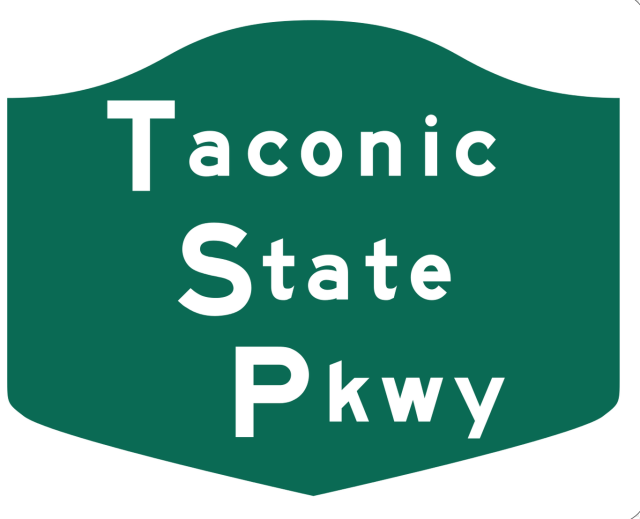

Westchester Parkways
Saw Mill River Parkway
Sprain Brook Parkway
Taconic State Parkway

Westchester Parkways
Cross County Parkway
Bear Mountain Parkway
Westchester and Bronx Parkways
Bronx River Parkway
Hutchinson River Parkway